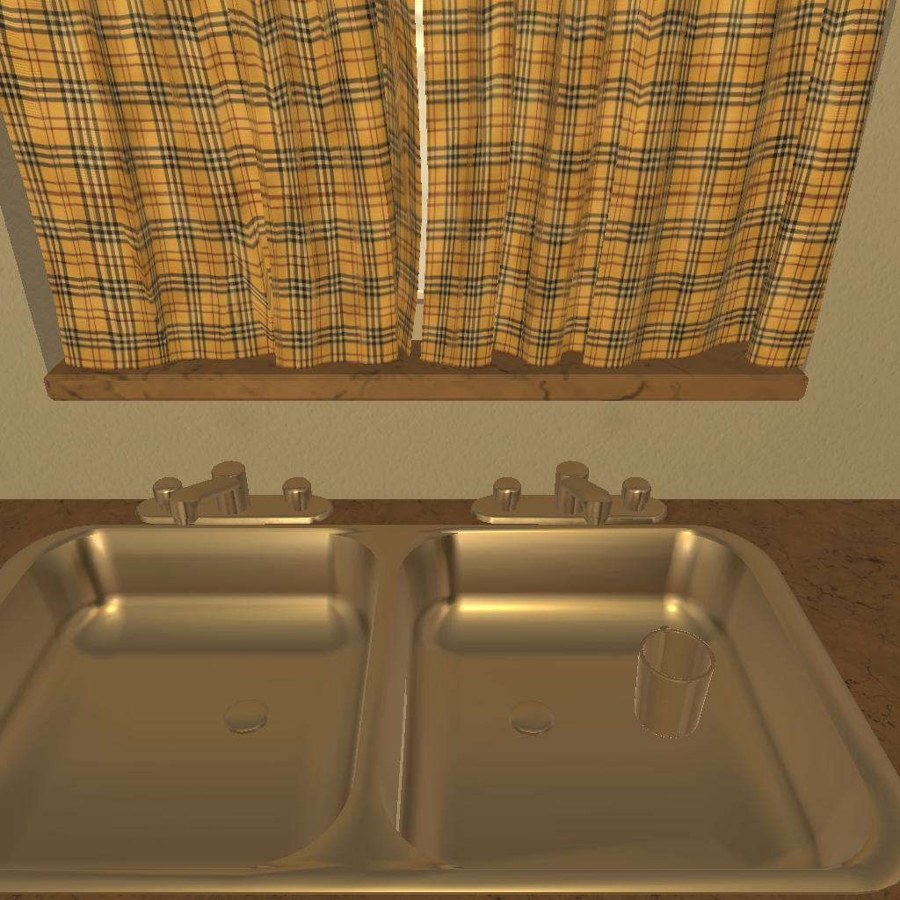

---------------------------------------------------------task: 14---------------------------------------------------------
--------------------------------------------------------------------------------------------------------------------------------------------------------------------
--------------------------------------------------------------------------------------------------------------------------------------------------------------------
Step:--------------------------------------------------------------------------1-------------------------------------------------------------------------------
----------------------------------------
VLM Prompt:
Image1:
Image2:
**Instruction**
1. Analyze the provided images to identify all visible household objects and compare the difference between images (e.h. whether the object is opened or not and taken on hand or not), focusing on those relevant to the task description "put a cool apple in countertop."
2. Use the analysis of images and the task hint "The agent must find an object of the desired type, pick it up, go to a fridge, cool the object with the fridge, then find the correct location to place it, and put it down there. The agent does not need to use the fridge button or open the fridge to cool the object, and the agent just needs to do action that is "cool the object with the fridge"." to answer the question: what is the most reasonable action in the choices for the task description "put a cool apple in countertop"?
3. Decide and write the answer using the template: The answer is: (i): , where i is the real number. If there is no desired object in images, search every place based on **Initial Observation** to find the object. And if no one is exactly correct, choose a similar answer.
**Initial Observation**
You are in the middle of a room. Looking quickly around you, you can see microwave (1), countertop (1-2), cabinet (1-11), diningtable (1), drawer (1-3), sink (1), sinkbasin (1), toaster (1), stoveburner (1-4), fridge (1), coffeemachine (1), garbagecan (1)
**Answer Choices**
(1): go to microwave 1
(2): go to countertop 1
(3): go to cabinet 1
(4): go to diningtable 1
(5): go to drawer 1
(6): go to sink 1
(7): go to cabinet 2
(8): go to cabinet 3
(9): go to sinkbasin 1
(10): go to cabinet 4
(11): go to cabinet 5
(12): go to drawer 2
(13): go to countertop 2
(14): go to toaster 1
(15): go to cabinet 6
(16): go to stoveburner 1
(17): go to cabinet 7
(18): go to stoveburner 2
(19): go to stoveburner 3
(20): go to stoveburner 4
(21): go to drawer 3
(22): go to cabinet 8
(23): go to cabinet 9
(24): go to cabinet 10
(25): go to coffeemachine 1
(26): go to cabinet 11
(27): go to garbagecan 1
(28): open fridge 1
(29): close fridge 1
(30): examine fridge 1
**Answer**
Let's think step by step by following the instructions.
----------------------------------------
----------------------------------------
Original Response:
Image 1 shows a sink with two basins and two sets of faucets with a glass on the right basin. There's a curtain above the sink, but no apples are visible. Image 2 displays a part of a fridge with a handle, and in the background, a toaster can be partially seen on a countertop, but again, no apple is in sight.
Based on the initial observation, there are several household items listed, but no mention of apples or where they might be located. The task description "put a cool apple in countertop" implies that the agent must first find an apple, cool it with the fridge (without the need to open it), and then place it on the countertop. Since we don't see an apple in either image, the agent must search the listed locations.
Considering the answer choices and the given task, the most reasonable action would be to find an apple first. Apples are commonly stored in cabinets or fridges. Since we need to cool the apple and the instruction specifically states the agent doesn't need to open the fridge to cool the object, it is implied that the apple may already be cool or will be cooled by proximity to the fridge. Therefore, searching the fridge first makes the most sense.
The answer is: (30): examine fridge 1.
----------------------------------------
----------------------------------------
>>> Refine Original VLM Response and Get Pure Action: examine fridge 1
----------------------------------------
-----------------------------------------------------------------
Running time: 10.57035207748413 seconds
Total Money: 7.673340000000007
-----------------------------------------------------------------
-----------------------------------------------------------------
Text Observation:On the fridge 1, you see a winebottle 1, and a butterknife 1.
-----------------------------------------------------------------
UNSUCCEED